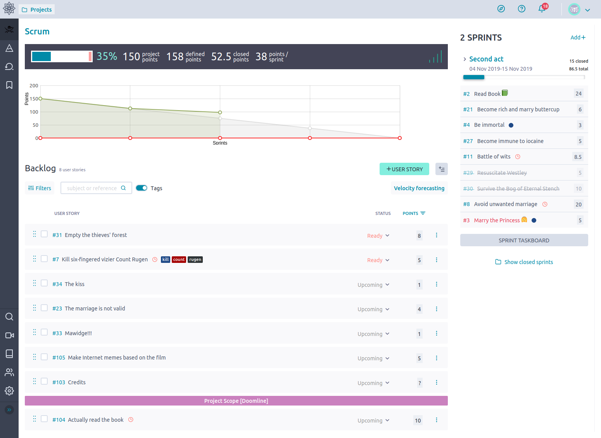

<section id="projects">
        <p class="section__text__p1">Browse My Recent Project</p>
        <div class="experience-details-container">
            <div class="about-container">
            <div class="details-container color-container">
                <div class="article-container">
                    
                </div>
                <h2 class="experience-sub-title project-title">Taiga-Based Scrum Metric Calculator</h2>
                <div class="btn-container">
                    <button class="btn btn-color-2 project-btn" 
                    onclick="window.open('https://https://github.com/SER515asu/ser515-maroons-404')">Github</button>
                </div>
            </div>
            <div class="details-container color-container">
                <div class="article-container">
                    
                </div>
                <h2 class="experience-sub-title project-title">ArtTrack:Art Discovery and Management</h2>
                <div class="btn-container">
                    <button class="btn btn-color-2 project-btn" 
                    onclick="window.open('https://https://github.com/rachitkulkarni9/artTrack_Team15')">Github</button>
                </div>
            </div>
    </section>